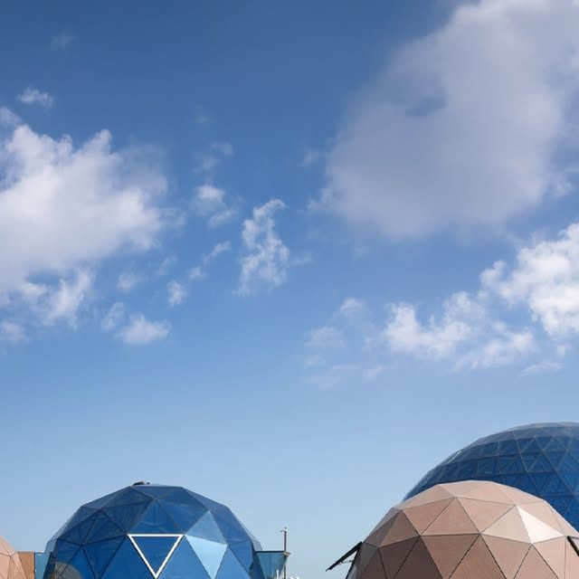
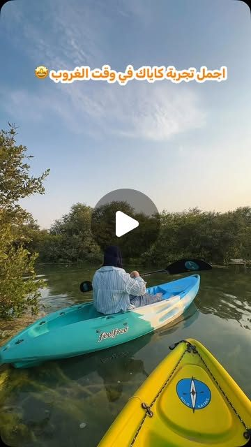
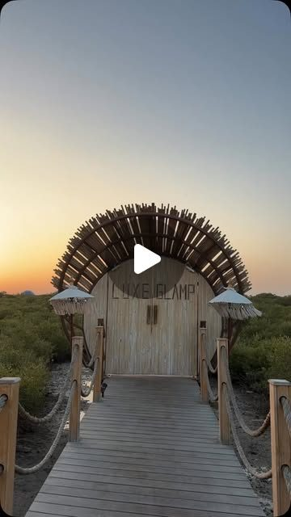
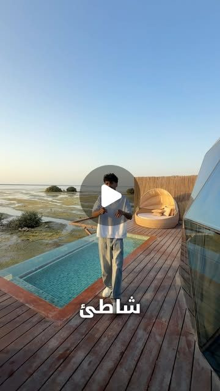
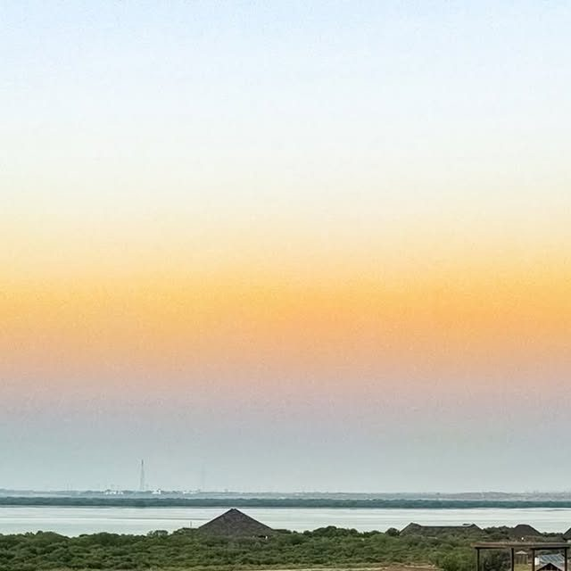

Thirteen thousand people follow you, and your best recent post drew 47 likes.
Glamping domes on the water, sunset kayaking through the mangroves and a calm cafe, in one of the quietest corners of Umm Al Quwain. Your last twelve posts drew between 0 and 47 likes, and you have no website, so a follower who wants to book has to message and wait. We read your Instagram closely and set it next to what has worked for the businesses we work with. This is what we found, the videos we would make and the plan.
A destination worth filming, and an audience that barely sees it.
The Mangrove Beach has what most places we look at do not: ten glass glamping domes, kayaking through the mangroves at golden hour, a cafe by the water, herons in the trees, and 2,197 Google reviews. You post regularly, and half of your recent posts are already reels, which is the right instinct. What is missing is short video with a person and a moment in it, and somewhere to send the people who watch it, because you have no website and every booking runs through a phone and a WhatsApp link.
13K
Instagram followers, from 154 posts
0 to 47
likes across your twelve most recent posts
47
likes on your best recent post, the ten glass domes
2,197
Google reviews, per your listing
What is already strong, and worth building on
Ten glass glamping domes on the water. Your own caption describes a resort of ten domes built for a calm, private stay. Each one is a set.
Sunset kayaking through the mangroves. Your own posts show guests paddling out as the water turns gold. That is the clip people search for.
A cafe by the water, down to the matcha. A reason to visit even without an overnight stay.
Herons and wildlife in the mangroves. Your posts show the birds among the trees, which marks you as a real eco destination.
2,197 Google reviews already, more than almost any venue we look at, and an audience of 13,000 who already follow you.
You do not need a new site to be beautiful or a new activity to offer. The domes, the kayaks, the cafe and the sunset are already here. Short video of a real guest having a real moment, posted on a plan and pointed at a way to book, is how you turn 13,000 followers into direct bookings.
02 · What has worked for places like yours
Real people, in the places they visit, doing something worth watching.
We plan short video for businesses that live or die by people turning up: restaurants, venues, product brands and places people visit. A licensed UAE crew would film it. The same formats work on the water: a person, a moment, and a reason to book.
87M+
views on content we have made for one North East business
70M
views on a single reel, planned and filmed in the venue
A reason beats a nice view. A sunset on its own rarely travels. The same sunset with a guest arriving at their dome, a paddle into the mangroves or a first reaction does.
The place is the set. The domes, the boardwalk, the lagoon and the cafe. A licensed UAE crew would film where your guests will actually go.
It is planned, not luck. We know which formats work before the crew arrives, and we pick the mix for your season and your activities.
View counts from our own client dashboard, checked 13 October 2026.
03 · Your website
No website, and that is the gap between 13,000 followers and a booking.
You have no site at all. Your Google listing shows "Add website", and your Instagram bio points to a phone number and a WhatsApp link. These are the changes we would make so the video turns into direct bookings.
What we saw
Why it matters
Fix
There is no website to send anyone to
Your Google listing shows "Add website". Anyone who watches a post and wants to book has to message you and wait for a reply.
A simple site with your domes, your activities and a "book on WhatsApp" button turns a follower into a booking in one tap.
Every booking runs through a phone
Booking is phone, a WhatsApp link in the bio and walk-in. There is no page that shows availability or takes an enquiry while you sleep.
85% of UAE residents say they would rather deal with a business over WhatsApp (YouGov for Zbooni, February 2024), so a booking that ends in a WhatsApp chat fits how your guests already behave.
2,197 Google reviews, with nowhere to land
You have more reviews than almost any venue we look at, but no site to carry that trust, your photos and your booking button in one place.
Put the reviews, the domes and the booking button on one page, so the trust you have already earned does some work.
No TikTok
We found Instagram only.
Post each video to Instagram and TikTok, so each one reaches a second audience searching for things to do in Umm Al Quwain.



Photos from your own Instagram. Your domes, your kayaks and your boardwalk are exactly what we would film.
04 · Your social channels
Thirteen thousand followers, and your best recent post drew 47 likes.
13K
Instagram followers
47
likes on your best recent post, the ten glass domes
0
likes on your weakest, a sunset gradient on 14 July
6 of 12
recent posts that are reels
Your twelve most recent posts run from 14 July to 2 October 2026, and half of them are reels, which is the right instinct. The pattern:
The audience is there, the reach is not. 13,000 people follow you, and the best of your last twelve posts drew 47 likes. The rest sat between 0 and 40.
The posts are calm and brand-led. Sunsets, skies and still views. Beautiful, but they rarely put a person or a moment on screen, so they do not travel to people who do not already follow you.
Your best stories are barely filmed. A first night in a glass dome, a sunset kayak, the herons in the mangroves. None of your recent posts tells one of those from a guest's point of view.
What this means. People book a stay when they can see themselves there. Short video of a real guest, a real dome and a real sunset, posted on a plan, is how you reach the people who have never heard of you and turn the followers you have into bookings.
Source: instagram.com/themangrovebeach public profile and the twelve most recent posts, checked 13 October 2026.
05 · What is working in your market
What is already working, and what is not.
Your best recent post is a glass dome at dusk. The strongest version of that is a person, a moment and a reason to book.

Your best recent postA dome and the pool at last light, 47 likes, the top of your last twelve. Built on your own caption about the ten glass domes.

Your weakestA sunset gradient over the water, 0 likes on 14 July. A beautiful sky, but no person and no moment to hold a viewer.
1
The dome is the star
Glass, water, the pool and the last light. Nobody else films your ten domes from a guest's first night.
2
People on screen
Your guests, your captains on the kayaks and your team, with permission. Reactions, first-person moments and what to expect, filmed on site.
3
A reason to book this week
A quiet weekend, a sunset kayak, a dome still open. Every video ends with a way to book on WhatsApp.
06 · Twelve videos we would make
Built from your domes, your water and your guests.
Every concept uses something you already have. Six are built to bring direct bookings in this season. Six are built to keep your Instagram growing.
Videos that bring bookings
6 concepts
What to expect
A night in a glass dome
"This is what a night in one of the ten domes looks like."
A guest arriving, the dome, the pool, the sunset, the morning. One minute, in order.
Why: answers the one question a first-time guest asks before they book.
First person
Kayak at golden hour
"6pm. The water turns gold. You paddle out."
A guest's own view from the kayak as they move through the mangroves at sunset.
Why: the sunset kayak is the thing people search for, filmed from the seat.
Experience
Morning in the mangroves
"Before the city wakes, the herons have the place to themselves."
The calm water, the boardwalk and the birds at first light.
Why: shows the quiet that sells a midweek escape from Dubai and Sharjah.
This week
Still open this weekend
"A dome, a kayak and a sunset, still open this weekend."
This weekend's domes and activities, with how to book on WhatsApp.
Why: gives the people who already follow you a reason to book this week, not someday.
Guest words
Why they came back
"What made you book again?"
A returning guest at the dome or the cafe, in their own words.
Why: repeat guests are the cheapest bookings you have.
Cafe
A matcha by the water
"The calmest cup in Umm Al Quwain."
The cafe, the drink and the view across the lagoon.
Why: the cafe is a reason to visit even without an overnight stay.
Organic that builds the audience
6 concepts
Series
A day at Mangrove Beach
"One day, from check-in to the last light."
Arrival to sunset in 60 seconds, every week.
Why: a weekly series people look for.
Place
This is Umm Al Quwain
"You do not have to leave the country to disappear."
The lagoon, the domes and the birds, cut to feel far from the city.
Why: positions you as the quiet alternative to Dubai.
Domes
Meet the ten domes
"Ten glass domes. Which one is yours?"
One dome per short video: the bed, the pool, the view.
Why: ten domes is a series on its own.
Behind the scenes
Setting up a dome
"Every dome starts like this."
The team preparing a dome for the next guests.
Why: people book places with a story they can see.
Wildlife
The herons of the mangroves
"The locals who were here first."
The birds among the mangrove trees, filmed quietly.
Why: nature content travels and marks you as a real eco destination.
Sunset
The last light
"Every evening ends like this."
A timelapse of sunset over the lagoon.
Why: your sunsets are your best advert, used properly.
07 · The plan
A plan built around your season.
Week 1
Plan and set up
A call to pick the twelve videos. We write the shot list and brief for the crew, and plan a simple way for every post to end in a WhatsApp booking.
Week 2
The shoot day
A licensed UAE crew would film to our shot list: a sunset kayak, a night in a dome, the cafe and the mangroves, guests and team included.
After the shoot
Edit, caption and post
We edit, caption and post the videos to Instagram and TikTok. Each one ends with how to book on WhatsApp.
Handover
Review together
We report what the videos reached and what they brought in, then hand over every video for you to keep and reuse.
What the shoot gives you: a batch of short videos filmed at your domes and on the water by a licensed UAE crew to our shot list, edited and captioned, posted to launch them. You keep every video.
08 · Who we are, and next steps
A Newcastle team that plans the videos, directs the shoot and edits them.
We plan every video around what brings people in, a licensed UAE crew would film to our shot list at your domes and on the water, and we edit, caption, post and report from our studio. We measure what matters to you: direct bookings, enquiries and repeat guests, not likes.
87M+
views on content we have made for one North East business
70M
views on a single reel, planned and filmed in the venue
Jay Williams and Anya Davey, the founders of Fusion Creative. I plan the videos and direct the shoot from Newcastle, and a licensed UAE crew would film to our shot list. I would be the person you call about the plan. Our team of editors turns every shoot day into finished videos, and a licensed UAE crew would film each one to our shot list.
Next steps
A 20 minute call to pick the videos and the shoot date.
A licensed UAE crew would film a sunset kayak and a night in a dome to our shot list.

Thirteen thousand followers, and your best recent post drew 47 likes.
Your twelve most recent posts run from 14 July to 2 October 2026, and half of them are reels, which is the right instinct. The pattern:
What this means. People book a stay when they can see themselves there. Short video of a real guest, a real dome and a real sunset, posted on a plan, is how you reach the people who have never heard of you and turn the followers you have into bookings.
Source: instagram.com/themangrovebeach public profile and the twelve most recent posts, checked 13 October 2026.